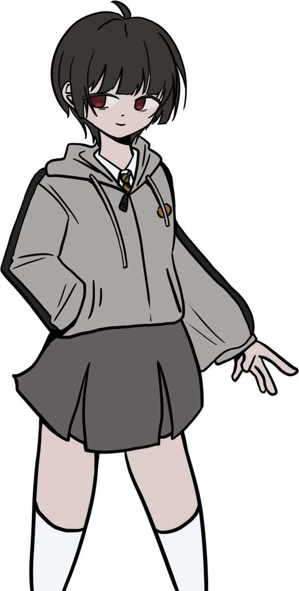
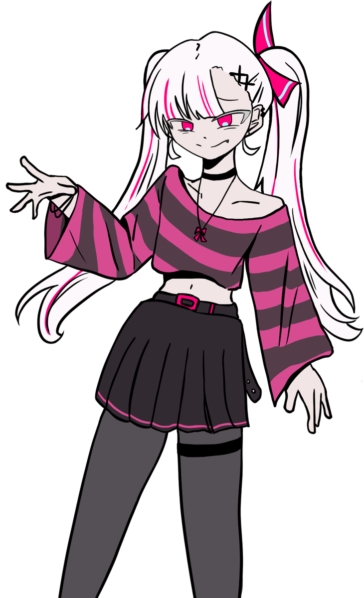

> 04 / STORY
마감 전날 밤, 노트북이 나를 삼켰다
prologue.txt_□×
새벽 세 시. 끝나지 않는 오류 로그를 바라보다 잠깐 눈을 감았다.
다시 눈을 떴을 때, 나는 모니터 안쪽에 서 있었다.
델타
접속자 확인. …당신, 개발자 맞죠? 그럼 이 버그들, 직접 치워 주셔야겠어요.
접속자 확인. …당신, 개발자 맞죠? 그럼 이 버그들, 직접 치워 주셔야겠어요.
나
잠깐, 여기가 어딘데?
잠깐, 여기가 어딘데?
▼ 계속하려면 클릭

주인공PLAYER
노트북 속으로 끌려 들어간 개발자. 이름은 플레이어가 직접 정해요.

카시아CASSIA
컴퓨터 세계에서 만나는 수수께끼의 인물.
델타AI GUIDE
시스템 안내를 맡은 AI. 스테이지마다 힌트와 잔소리를 건넵니다.